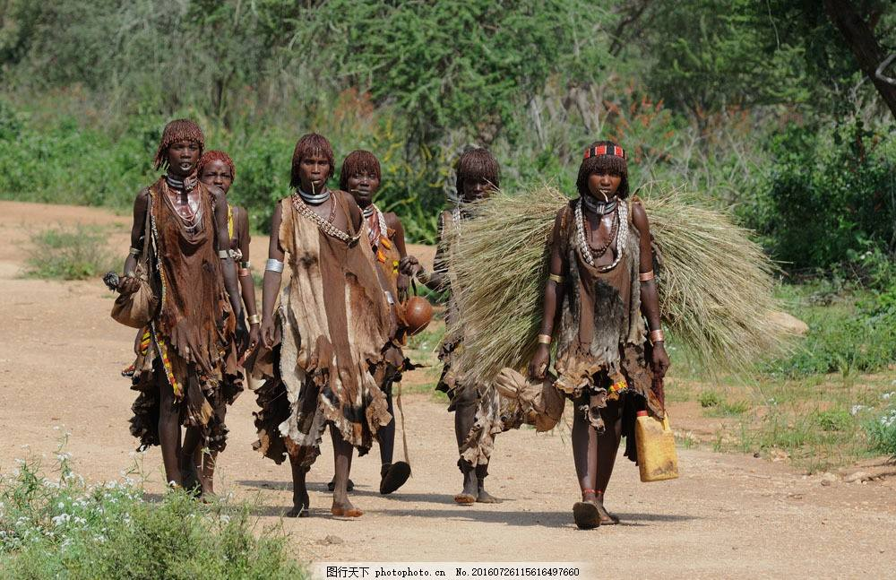

昨日，网络出现奇文：《让非洲文化“走进寻常百姓家”》，南京大学张姓教授写道：“在企业、教育、卫生、移民管理、国际发展合作中要有意识地宣传非洲文化的特色和多样性，让更多的民众认识、理解、尊重和包容非洲各国文化的多样性，避免狭隘的歧视与偏见，让非洲文化也走进中国的寻常百姓家”。
我们的砖家屡屡发出各个领域的奇谈怪论，智库里的脑子不知是进水太多还是良心坏了，不想促进社会进步，民族发展，只想着向着后方，大步退去。亦或是想讨好上峰 ，抢先表态及出谋划策？
不清楚非洲有什么文化？是裸身住在草屋山洞的文化，还是用颈圈把脖子撑成恐怖的长度的文化，还是食人族把肤色不同的人都当一道菜肴吃掉的文化？
一位著名的黑人牧师对自己的种族有过这种反省：“在白人来到非洲之前，黑人没做成一件事，没有建过超过一层的非木头，石头，泥巴房子，没有排水系统，甚至身上没有一块布……”。不懂得发明的黑人，有什么文化？
一边说抵制“西方文化渗透”，一边却让非洲文化“走进寻常百姓家”。同样是外来文化，为什么有的要抵制，有的却鼓励百姓接受？难道非洲文化优于西方文化？那为什么官员们的子女都不远万里跑到西方，而不是去非洲？
我们一直在强调弘扬中华民族的传统文化，大国自信，而且是四个自信，难道我们上下五千年的文明史竟然敌不过非洲的原始野蛮文化，需要它们来同化一下？
非洲文化自古以来就被野蛮、愚昧笼罩，有的部落种族在嘴上穿大铁环，基本不事农耕，懒散，淫乱。艾滋病原来在大猩猩身上，后来传到西非人上。非洲有人兽淫合的惯例，非洲黑人没有文字，非洲人对自己的所谓文化根本不感兴趣，想着都是移民离开非洲，接受西方文化或者东方文化。
人类的祖先从非洲走出来，并在地球各大陆繁衍进化，花了几百万年，而那些DAB1变种基因正是几百万年的沉淀结果，智商下降5个百分点，从生物学上说，也就相当于退化了35万年。中国人的智商比黑人多25，生出的黄黑混血中和以后智商比中国人要少12.5。相当于退化了80多万年！
中国年轻大学生们18-22岁艾滋病例显著增多，拜不断进入中国的黑人留学生所赐；让畜牧业损失惨重，在多省市流行不断的猪瘟拜非洲所赐；在广州，一黑人进入士多店，根本不付钱，拿了一筒卫生卷纸就走；我读书时的学校里也有黑人留学生，我们第二天要考试，他们在宿舍楼下拍着手鼓跳唱一夜，说了几次安静点儿让我们睡觉，人家都置若罔闻，导致男生们穿衣下楼与他们对峙；广州一黑人强暴中国女大学生，愤怒群众剁下他的作案工具，那些照片还历历在目；在巴黎街头，一辆载满黑人的车疾驰而来，差点将我们在行人绿灯状态下过马路的中国游客撞上，吓得我们躲闪时候，人家那边厢已经在车里哈哈狂笑，还对着我们一众女子伸出中指来了。一香港朋友，是未婚小伙儿，旅游到美国，不知根底，以为是露营体验，在纽约棚区扎帐篷过夜，半夜被一群黑人闯入鸡奸；一广州女性朋友对我讲述她和另一女友在巴黎地铁的经历，她们被一群黑人团团围住，欲行非礼，女友向法国白人男子哀求帮助，幸而法国男子人好，吓退了黑人，朋友从此再不敢到有黑人的地方，包括广州的黑人区——你要说我种族歧视吗？这些都是我亲眼所见当事人亲口告知的事实。你强调政治正确吗？只是因为你根本没遇过这些事。
当然，这些是黑人中的败类，还有相当一部分黑人是安居乐业无犯罪记录的，但不可否认的是，黑人群体的犯罪率明摆着居高不下。
让非洲的什么文化走入百姓家？强暴？艾滋？野蛮？蒙昧？